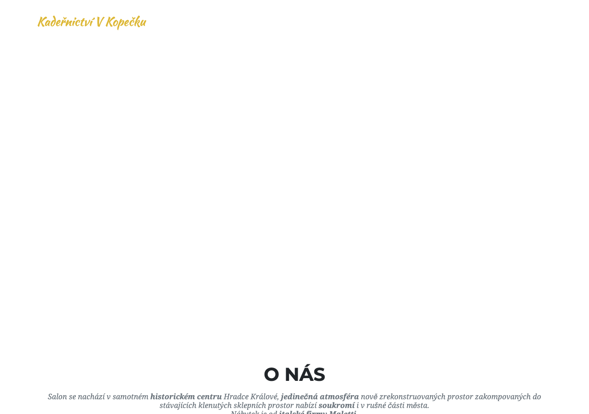
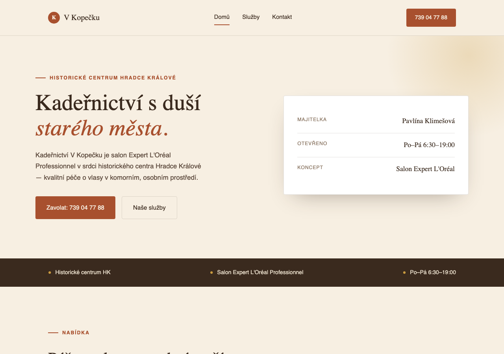
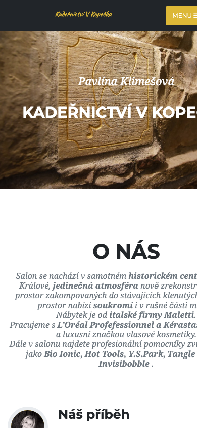
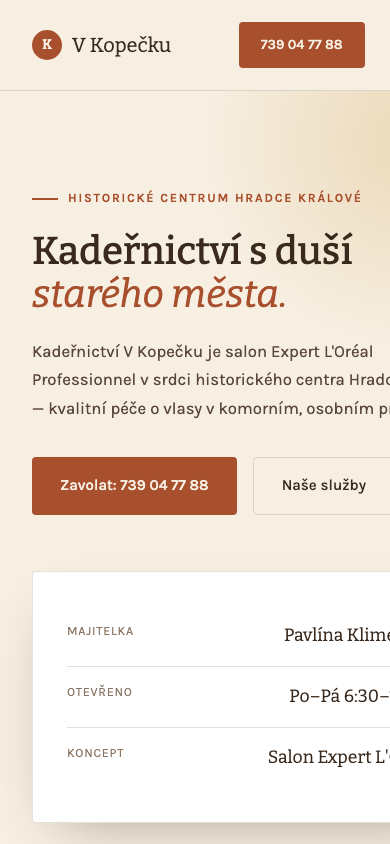

Screenshoty aktuálního webu salonu (kadernictvivkopecku.cz) vedle návrhu nového webu. Obojí je reálný snímek obrazovky, ne kresba.

kadernictvivkopecku.cz - téměř bez stylu, bez fotek, bez jasné struktury.

Návrh: jasná nabídka, kontakt na první pohled, styl odpovídající salonu.
Klientky si salon hledají hlavně na mobilu - takhle vypadá stejná stránka na mobilním displeji.

